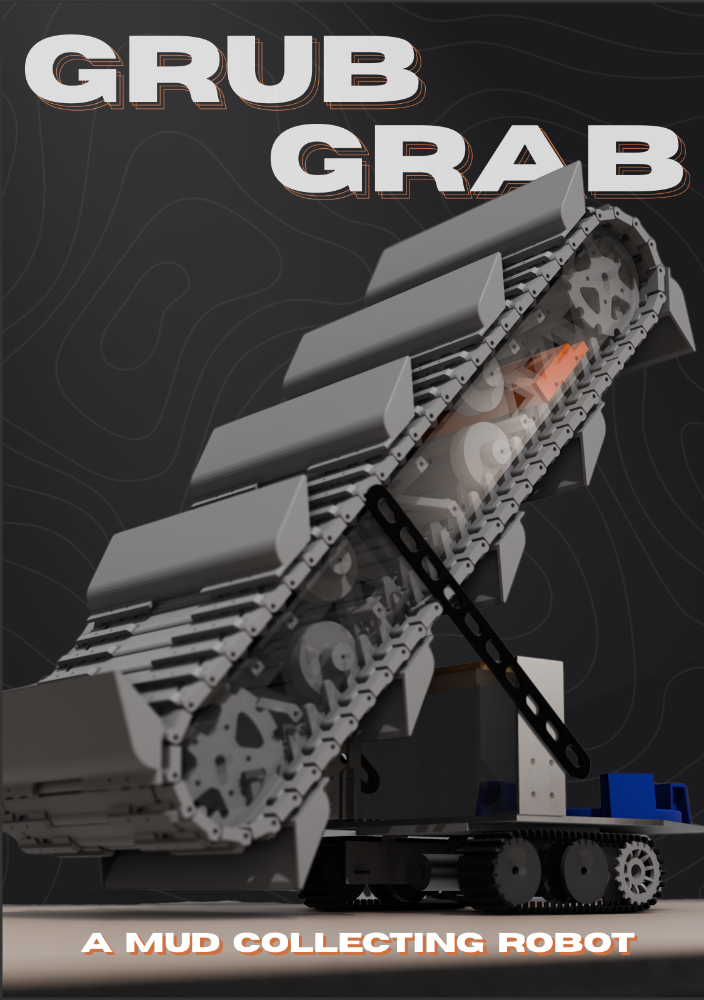
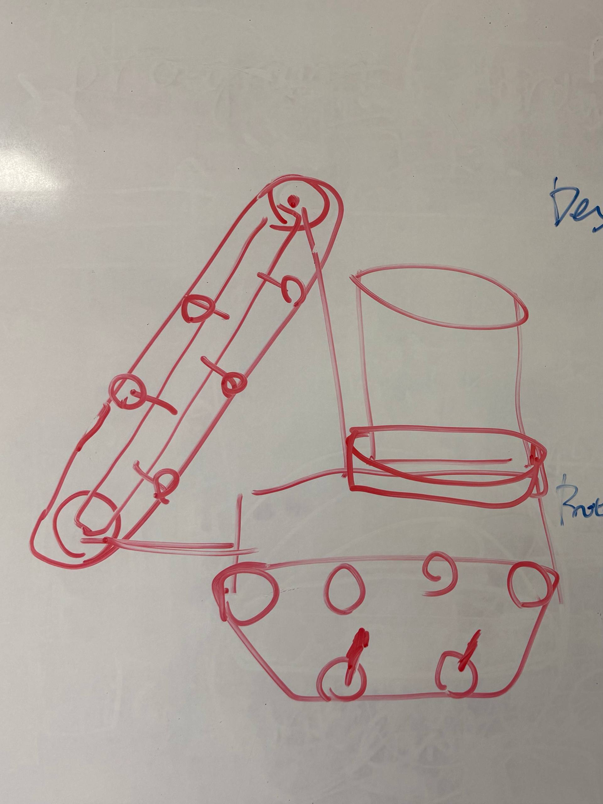
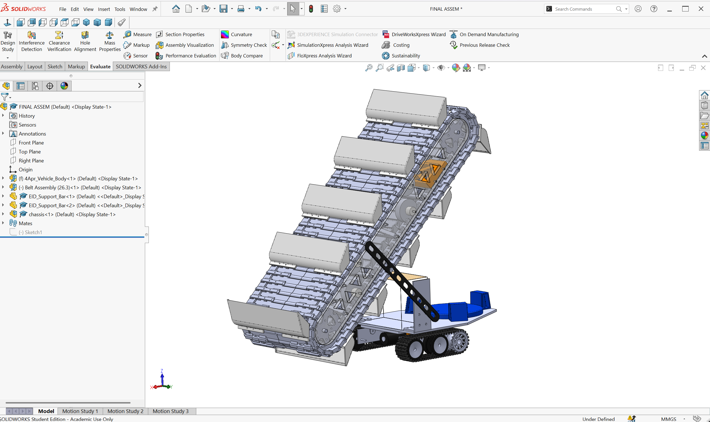
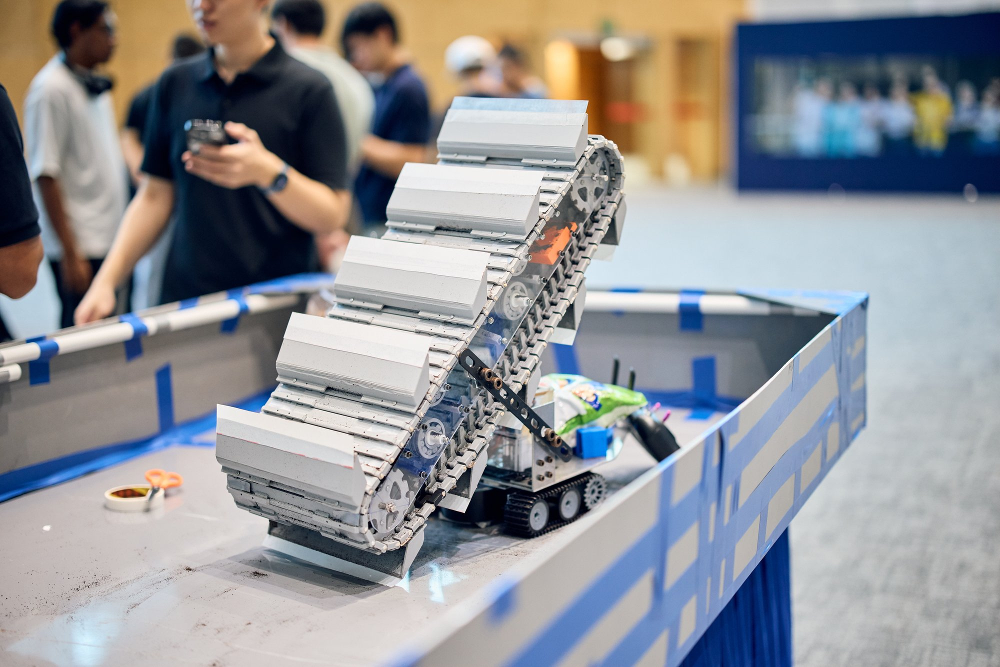
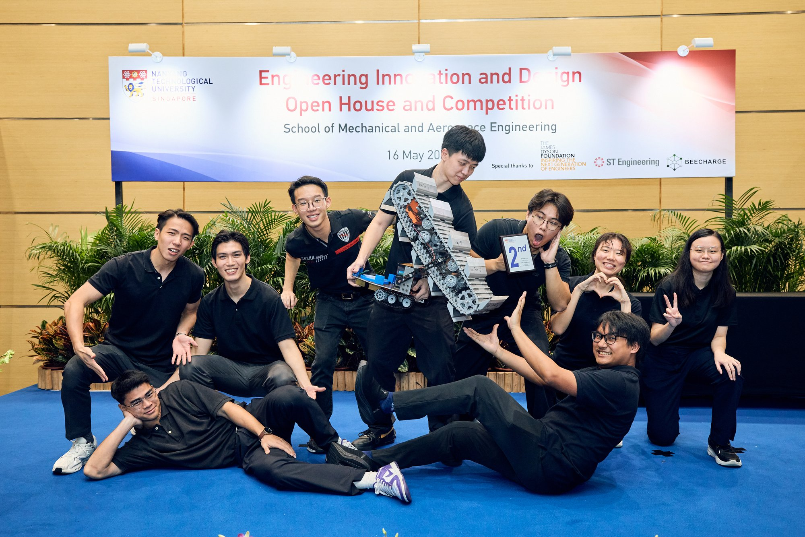
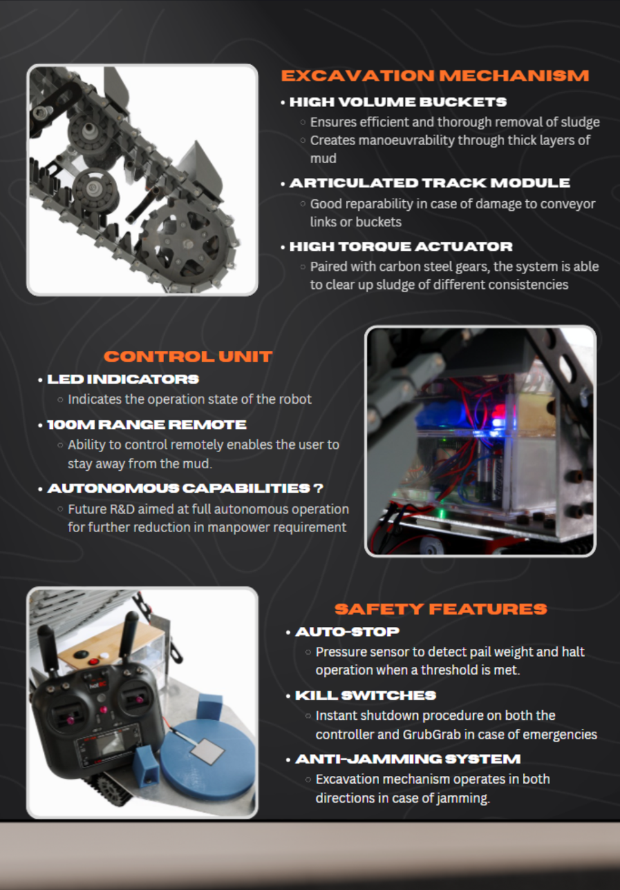

Selected Work
GrubGrab






Swipe or scroll horizontally for more →
GrubGrab is a mud-collecting robot designed to reduce the manpower requirement for disaster relief in confined spaces of flood-stricken regions. While obstructions on large and open spaces such as roads can be quickly removed with heavy machinery, houses that are damaged and filled with debris and mud have to be cleared through blood, sweat, and tears. GrubGrab solves this problem in its quick, easy-to-deploy nature.
In this project, I led a 9-person team through conceptualisation, design, and build over one semester for NTU's Engineering Innovation Design (EID) course, and we placed 2nd in the Safety & Health category. My own scope was wide:
- Built the Arduino control system bridging hardware and 5-channel controls with physical and soft e-stops.
- Oversaw structural design across the chassis team and the scooping-belt mechanism team, interfacing custom parts with standard hardware
- Ran FDM 3D printing for rapid design iterations
- Delegated manufacturing workload across the team and led active troubleshooting during assembly
- Planned the presentation and display of our rover for the open house event.